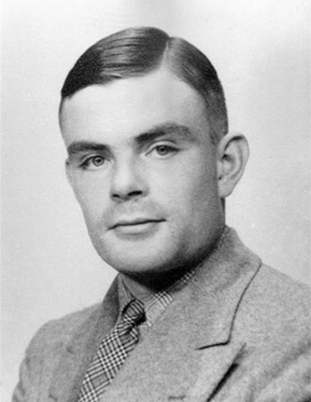

Here's biography of Alan Turing's life:
Alan Turing, in full Alan Mathison Turing, (born June 23, 1912, London, England—died June 7, 1954, Wilmslow, Cheshire), British mathematician and logician who made major contributions to mathematics, cryptanalysis, logic, philosophy, and mathematical biology and also to the new areas later named computer science, cognitive science, artificial intelligence, and artificial life.
- The Entscheidungsproblem
- - What mathematicians called an “effective” method for solving a problem was simply one that could be carried by a human mathematical clerk working by rote. In Turing’s time, those rote-workers were in fact called “computers,” and human computers carried out some aspects of the work later done by electronic computers. The Entscheidungsproblem sought an effective method for solving the fundamental mathematical problem of determining exactly which mathematical statements are provable within a given formal mathematical system and which are not. A method for determining this is called a decision method. In 1936 Turing and Church independently showed that, in general, the Entscheidungsproblem problem has no resolution, proving that no consistent formal system of arithmetic has an effective decision method. In fact, Turing and Church showed that even some purely logical systems, considerably weaker than arithmetic, have no effective decision method. This result and others—notably mathematician-logician Kurt Gödel’s incompleteness results—dashed the hopes, held by some mathematicians, of discovering a formal system that would reduce the whole of mathematics to methods that (human) computers could carry out. It was in the course of his work on the Entscheidungsproblem that Turing invented the universal Turing machine, an abstract computing machine that encapsulates the fundamental logical principles of the digital computer.
- The Church-Turing thesis
- - An important step in Turing’s argument about the Entscheidungsproblem was the claim, now called the Church-Turing thesis, that everything humanly computable can also be computed by the universal Turing machine. The claim is important because it marks out the limits of human computation. Church in his work used instead the thesis that all human-computable functions are identical to what he called lambda-definable functions (functions on the positive integers whose values can be calculated by a process of repeated substitution). Turing showed in 1936 that Church’s thesis was equivalent to his own, by proving that every lambda-definable function is computable by the universal Turing machine and vice versa. In a review of Turing’s work, Church acknowledged the superiority of Turing’s formulation of the thesis over his own (which made no reference to computing machinery), saying that the concept of computability by a Turing machine “has the advantage of making the identification with effectiveness…evident immediately.”
- Code breaker
- - Having returned from the United States to his fellowship at King’s College in the summer of 1938, Turing went on to join the Government Code and Cypher School, and, at the outbreak of war with Germany in September 1939, he moved to the organization’s wartime headquarters at Bletchley Park, Buckinghamshire. A few weeks previously, the Polish government had given Britain and France details of the Polish successes against Enigma, the principal cipher machine used by the German military to encrypt radio communications. As early as 1932, a small team of Polish mathematician-cryptanalysts, led by Marian Rejewski, had succeeded in deducing the internal wiring of Enigma, and by 1938 Rejewski’s team had devised a code-breaking machine they called the Bomba (the Polish word for a type of ice cream). The Bomba depended for its success on German operating procedures, and a change in those procedures in May 1940 rendered the Bomba useless. During the autumn of 1939 and the spring of 1940, Turing and others designed a related, but very different, code-breaking machine known as the Bombe. For the rest of the war, Bombes supplied the Allies with large quantities of military intelligence. By early 1942 the cryptanalysts at Bletchley Park were decoding about 39,000 intercepted messages each month, a figure that rose subsequently to more than 84,000 per month—two messages every minute, day and night. In 1942 Turing also devised the first systematic method for breaking messages encrypted by the sophisticated German cipher machine that the British called “Tunny.” At the end of the war, Turing was made an Officer of the Most Excellent Order of the British Empire (OBE) for his code-breaking work.
- Computer designer
- - In 1945, the war over, Turing was recruited to the National Physical Laboratory (NPL) in London to create an electronic computer. His design for the Automatic Computing Engine (ACE) was the first complete specification of an electronic stored-program all-purpose digital computer. Had Turing’s ACE been built as he planned, it would have had vastly more memory than any of the other early computers, as well as being faster. However, his colleagues at NPL thought the engineering too difficult to attempt, and a much smaller machine was built, the Pilot Model ACE (1950).
NPL lost the race to build the world’s first working electronic stored-program digital computer—an honour that went to the Royal Society Computing Machine Laboratory at the University of Manchester in June 1948. Discouraged by the delays at NPL, Turing took up the deputy directorship of the Computing Machine Laboratory in that year (there was no director). His earlier theoretical concept of a universal Turing machine had been a fundamental influence on the Manchester computer project from the beginning. After Turing’s arrival at Manchester, his main contributions to the computer’s development were to design an input-output system—using Bletchley Park technology—and to design its programming system. He also wrote the first-ever programming manual, and his programming system was used in the Ferranti Mark I, the first marketable electronic digital computer (1951).
- Artificial intelligence pioneer
- - Turing was a founding father of artificial intelligence and of modern cognitive science, and he was a leading early exponent of the hypothesis that the human brain is in large part a digital computing machine. He theorized that the cortex at birth is an “unorganised machine” that through “training” becomes organized “into a universal machine or something like it.” Turing proposed what subsequently became known as the Turing test as a criterion for whether an artificial computer is thinking (1950).
- Last years
- - Turing was elected a fellow of the Royal Society of London in March 1951, a high honour, yet his life was about to become very hard. In March 1952 he was convicted of “gross indecency”—that is to say, homosexuality, a crime in Britain at that time—and he was sentenced to 12 months of hormone “therapy.” Now with a criminal record, he would never again be able to work for Government Communications Headquarters (GCHQ), the British government’s postwar code-breaking centre.
Turing spent the remainder of his short career at Manchester, where he was appointed to a specially created readership in the theory of computing in May 1953. From 1951 Turing had been working on what is now known as artificial life. He published “The Chemical Basis of Morphogenesis” in 1952, describing aspects of his research on the development of form and pattern in living organisms. Turing used Manchester’s Ferranti Mark I computer to model his hypothesized chemical mechanism for the generation of anatomical structure in animals and plants.
In the midst of this groundbreaking work, Turing was discovered dead in his bed, poisoned by cyanide. The official verdict was suicide, but no motive was established at the 1954 inquest. His death is often attributed to the hormone “treatment” he received at the hands of the authorities following his trial for being gay. Yet he died more than a year after the hormone doses had ended, and, in any case, the resilient Turing had borne that cruel treatment with what his close friend Peter Hilton called “amused fortitude.” Also, to judge by the records of the inquest, no evidence at all was presented to indicate that Turing intended to take his own life, nor that the balance of his mind was disturbed (as the coroner claimed). In fact, his mental state appears to have been unremarkable at the time. Although suicide cannot be ruled out, it is also possible that his death was simply an accident, the result of his inhaling cyanide fumes from an experiment in the tiny laboratory adjoining his bedroom. Nor can murder by the secret services be entirely ruled out, given that Turing knew so much about cryptanalysis at a time when homosexuals were regarded as threats to national security.
By the early 21st century Turing’s prosecution for being gay had become infamous. In 2009 British Prime Minister Gordon Brown, speaking on behalf of the British government, publicly apologized for Turing’s “utterly unfair” treatment. Four years later Queen Elizabeth II granted Turing a royal pardon.